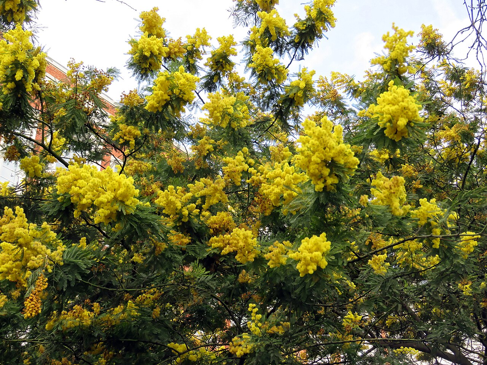

Como planejar alimento para as abelhas o ano todo

As abelhas dependem diretamente das flores para sobreviver, pois se alimentam de néctar e pólen. Por isso, garantir alimento durante todo o ano é essencial para a saúde das colônias.
No Paraná, as floradas variam bastante conforme as estações do ano, sendo mais intensas na primavera e verão.
Durante o outono e inverno, a disponibilidade de flores diminui, o que pode enfraquecer as colônias se não houver planejamento adequado.
Para evitar isso, o produtor deve organizar um calendário de floradas dentro da propriedade, combinando espécies que florescem em diferentes épocas.
Plantas como bracatinga são muito importantes no inverno, pois garantem alimento in períodos mais críticos.
Já no verão e primavera, espécies nativas e frutíferas ajudam a manter grande oferta de néctar e pólen.
Em casos de necessidade, pode ser feita alimentação complementar, garantindo que as colônias não enfraqueçam até o retorno das floradas naturais.
De acordo com o Guia de Alimentação de Abelhas Nativas da Embrapa (2022), recomenda‑se incluir suplementos de açúcar demerara e água mineral nas épocas de escassez, combinados com óleos essenciais de alecrim para estimular a atividade das abelhas. (Fonte: EMBRAPA, 2022)